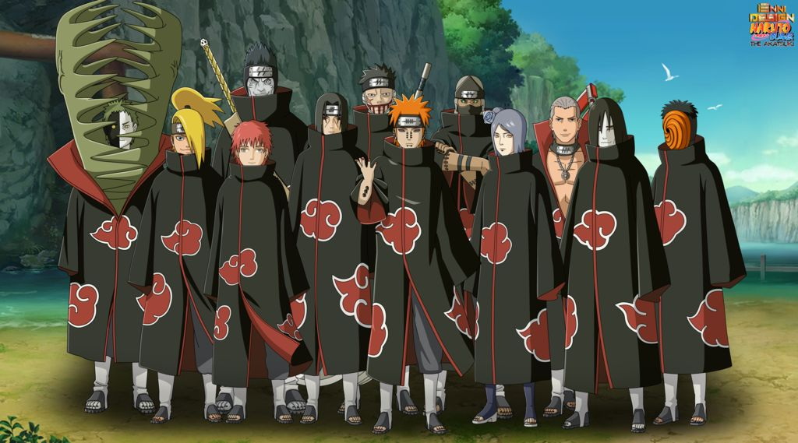
Naruto
Akatsuki
La Akatsuki es la organizacion criminal mas peligrosa de Naruto. Sus miembros son ninjas renegados extremadamente poderosos, conocidos por sus capas negras con nubes rojas, por trabajar en parejas y por capturar a las Bestias con Cola. Aunque nacio con una idea de paz para los paises arrasados por la guerra, acabo transformandose en un grupo terrorista manipulado desde las sombras por Obito Uchiha.
Volver a NarutoGuia general
La organizacion que eleva Naruto a escala mundial
Akatsuki cambia la historia de Naruto porque deja de haber problemas locales o simples rivalidades entre aldeas. Con este grupo la amenaza se vuelve internacional: capturan bijus, tumban lideres, infiltran paises y obligan a las grandes naciones shinobi a reaccionar ante un enemigo comun.
Lo mas interesante es que no todos sus miembros son villanos planos. Muchos vienen marcados por guerras, traiciones, clanes destruidos o formas distintas de entender el sufrimiento. Por eso Akatsuki mezcla terrorismo, tragedia y personajes enormemente carismaticos.
- Su imagen visual es una de las mas reconocibles del anime por la capa de nubes rojas.
- La mayoria de sus miembros son ninjas renegados de nivel kage o cercano.
- Su caza de bijus empuja la serie hacia la Cuarta Gran Guerra Ninja.
Lideres y figuras de mando

Nagato (Pain)
Lider visibleDe que va: es el lider visible de Akatsuki y cree que solo el dolor absoluto puede obligar al mundo a conocer la paz.
Poderes: Rinnegan, Seis Caminos de Pain, absorcion de chakra y tecnicas gravitatorias devastadoras como Shinra Tensei o Chibaku Tensei.
Papel: representa la corrupcion de un ideal noble destruido por la guerra.
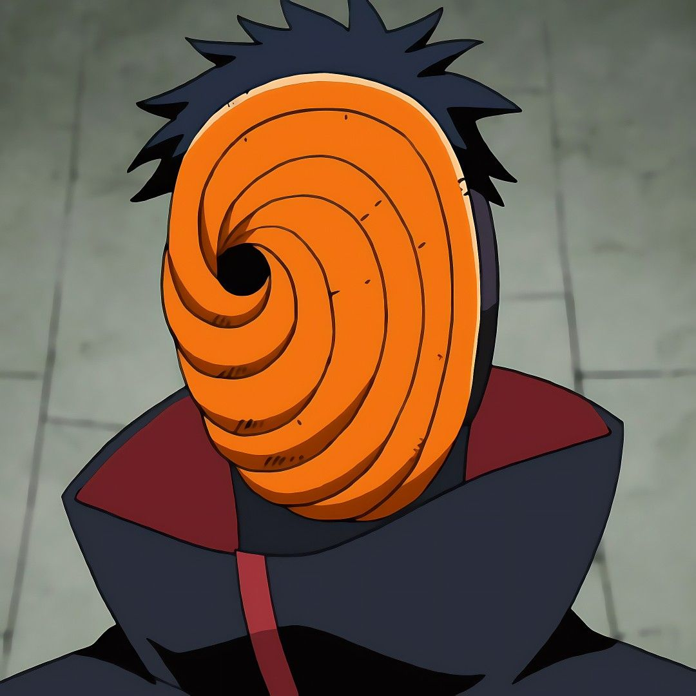
Obito Uchiha
Manipulador en la sombraDe que va: manipulo Akatsuki desde las sombras durante anos bajo el papel de Tobi, empujando al grupo hacia el Tsukuyomi Infinito.
Poderes: Kamui, Sharingan, Mangekyo Sharingan, mas tarde Rinnegan y el poder del Diez Colas.
Papel: convierte a Akatsuki en la antesala de una guerra total por un mundo ilusorio.
Miembros principales
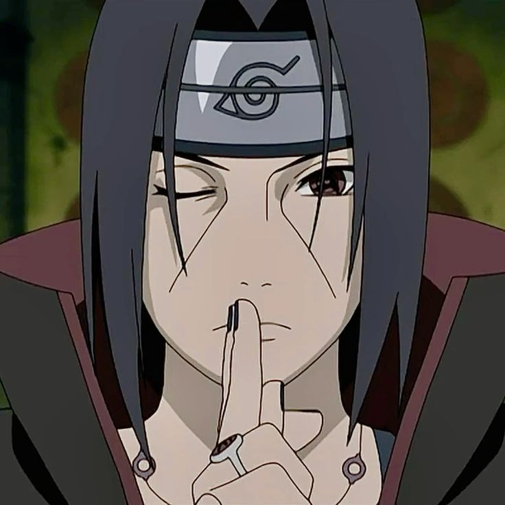
Itachi Uchiha
El doble agente tragicoDe que va: genio del clan Uchiha que se une a Akatsuki para proteger Konoha desde dentro y vigilar amenazas mayores.
Poderes: Tsukuyomi, Amaterasu, Susanoo, inteligencia tactica y genjutsu de elite.
Clave: es uno de los personajes mas complejos porque parece villano, pero en realidad vive sacrificado por su aldea y su hermano.
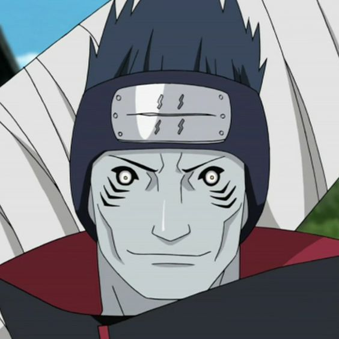
Kisame Hoshigaki
El monstruo de la NieblaDe que va: ex ninja de la Niebla y companero de Itachi, conocido por su brutalidad y su fidelidad a la organizacion.
Poderes: enormes reservas de chakra, Samehada y tecnicas acuaticas brutales capaces de alterar todo el campo de batalla.
Clave: es uno de los miembros mas fisicos y resistentes de Akatsuki.
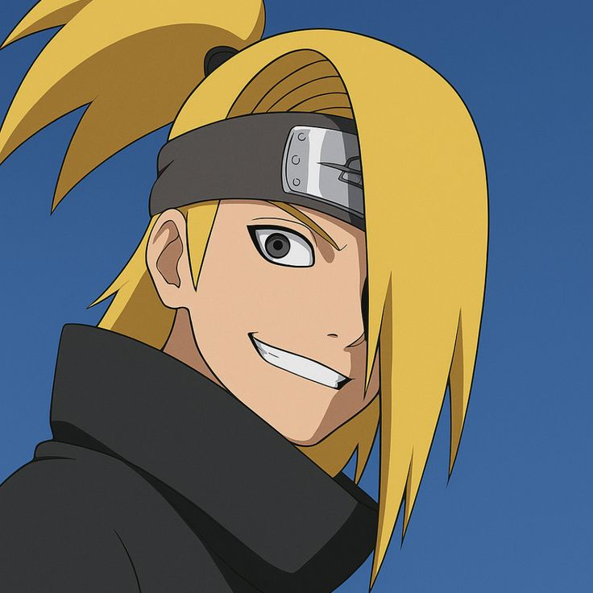
Deidara
El artista explosivoDe que va: artista obsesionado con las explosiones, convencido de que la belleza suprema es instantanea y devastadora.
Poderes: arcilla explosiva, aves y dragones de explosion, minas microscopicas y tecnicas suicidas extremas.
Frase famosa: "El arte es una explosion".
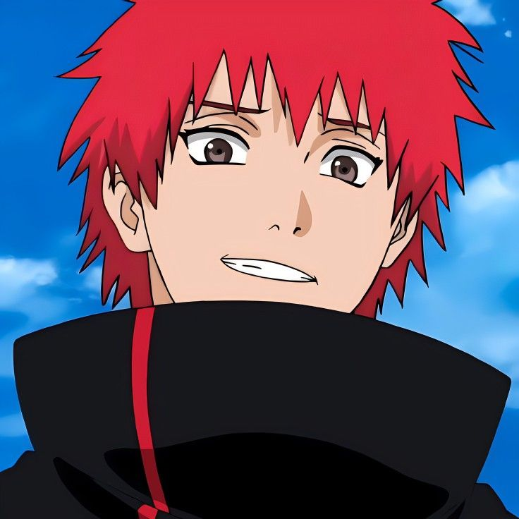
Sasori
Marionetista letalDe que va: maestro marionetista convertido en marioneta humana, obsesionado con la permanencia y la perfeccion fria.
Poderes: marionetas humanas, armas ocultas, venenos letales y una coleccion brutal de cuerpos transformados.
Clave: representa una vision del arte completamente opuesta a la de Deidara.
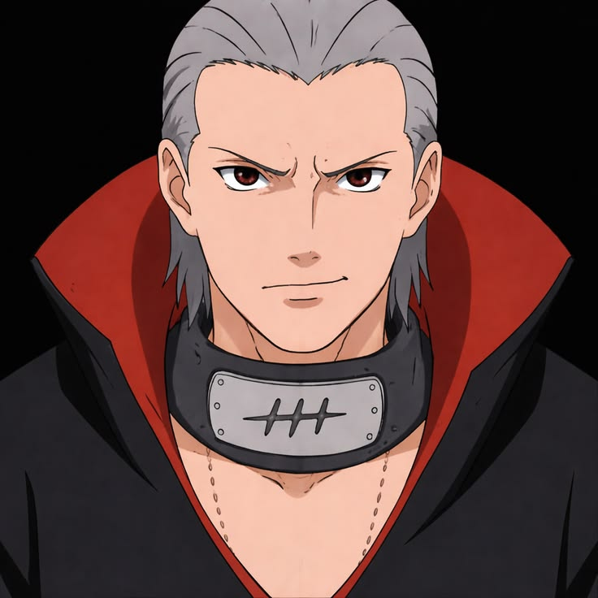
Hidan
Fanatico inmortalDe que va: seguidor fanatico de Jashin, agresivo, burlon e incapaz de morir por medios normales.
Poderes: inmortalidad y maldiciones rituales que reflejan el dano recibido sobre su enemigo.
Clave: su sadismo lo convierte en uno de los miembros mas perturbadores de Akatsuki.
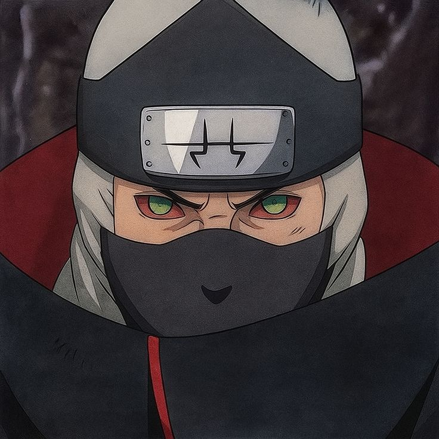
Kakuzu
Mercenario del dineroDe que va: mercenario obsesionado con el dinero y con una vision completamente fria de la vida y el asesinato.
Poderes: varios corazones, hilos negros, gran durabilidad y uso de multiples elementos a traves de sus mascaras.
Clave: su combinacion con Hidan crea una pareja casi imposible de desgastar.
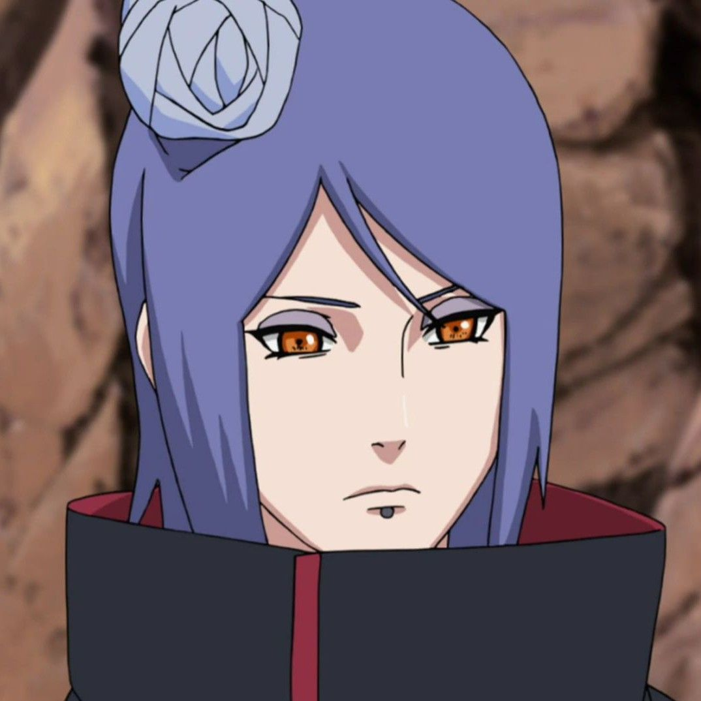
Konan
El angel de papelDe que va: amiga de infancia de Nagato y Yahiko, y una de las pocas voces verdaderamente leales al ideal original.
Poderes: manipulacion de papel, clonacion, trampas masivas y tecnicas explosivas gigantes.
Clave: es de las miembros mas infravaloradas y demuestra un nivel enorme contra Obito.
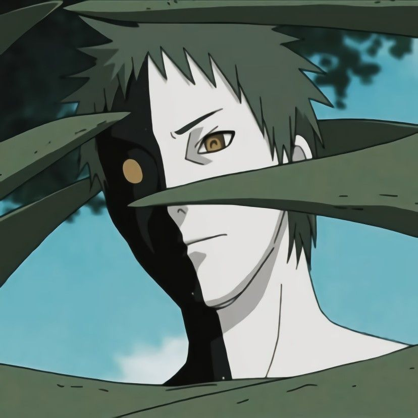
Zetsu
Espia y pieza historicaDe que va: ser misterioso ligado al espionaje, la infiltracion y a la manipulacion historica mas profunda de la serie.
Poderes: espionaje, clonacion, ocultacion y una conexion directa con el plan detras de Madara y Kaguya.
Clave: su verdadero papel redefine quien estaba moviendo realmente la historia desde hace siglos.
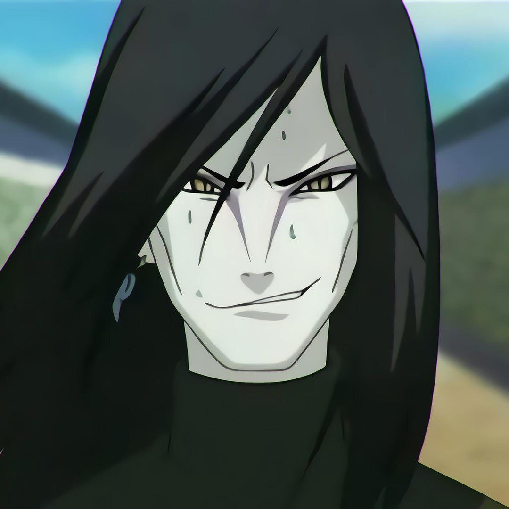
Orochimaru
Ex miembroDe que va: abandono Akatsuki tras fracasar al intentar robar el cuerpo de Itachi Uchiha y apoderarse de su Sharingan.
Papel en Akatsuki: demuestra que incluso alguien como Orochimaru podia quedar pequeno frente a ciertos miembros del grupo.
Importancia: su salida cambia el tablero de villanos de Naruto y abre otra gran amenaza paralela.
Objetivo de Akatsuki
Inicio
Ideal original
La Akatsuki original nace con el deseo de traer paz a paises destruidos por guerras, especialmente Amegakure. Yahiko, Nagato y Konan querian evitar que su tierra siguiera siendo un campo de batalla usado por las grandes potencias.
- Su meta inicial era politica y casi revolucionaria.
- La guerra constante termino deformando ese ideal.
- La muerte de Yahiko rompe el rumbo original del grupo.
Desvio total
Captura de los bijus y Tsukuyomi Infinito
Despues el plan pasa a capturar todas las Bestias con Cola para crear un arma definitiva, controlar el mundo y ejecutar el Tsukuyomi Infinito. Akatsuki deja de ser una organizacion radical con discurso de paz y se convierte en la herramienta de un proyecto global de dominacion ilusoria.
- Las parejas salen a cazar jinchurikis por todo el mundo.
- El objetivo militar del grupo amenaza a todas las aldeas.
- La organizacion se vuelve la chispa de la guerra final.
Parejas famosas
Dupla 1
Itachi + Kisame
Una mezcla perfecta entre inteligencia, genjutsu y destruccion directa. Itachi aporta precision casi quirurgica y Kisame una potencia de chakra monstruosa.
Dupla 2
Deidara + Sasori
Su relacion destaca porque discuten constantemente sobre que es el arte real: la belleza fugaz de la explosion o la permanencia fria de la marioneta eterna.
Dupla 3
Hidan + Kakuzu
Son una de las parejas mas salvajes del grupo porque ambos soportan danos imposibles y tienen una dinamica de insultos, codicia y fanatismo constante.
Dupla 4
Pain + Konan
Es la pareja mas ligada al origen de Akatsuki. Dolor, memoria de Yahiko y fidelidad al pasado definen su relacion y el tono mas tragico de la organizacion.
Por que Akatsuki es tan iconica
- Estetica inolvidable. La capa negra con nubes rojas es uno de los disenos mas reconocibles del anime.
- Villanos muy distintos. Cada miembro tiene estilo de combate, filosofia y personalidad propia.
- Peso narrativo enorme. Sin Akatsuki no se entiende la escalada hacia Pain, Obito, Madara y la guerra final.
- Tragedia real. Muchos nacen de la guerra y no del simple deseo de hacer mal.
Curiosidades y detalles extra
- Itachi realmente seguia protegiendo Konoha, aunque desde fuera pareciera uno de los mayores criminales de la serie.
- Obito fingio ser Tobi durante mucho tiempo, usando una personalidad ridicula para ocultar su rol real.
- Pain destruyo Konoha casi el solo, dejando uno de los momentos mas impactantes de todo Naruto.
- Deidara odiaba a los Uchiha, en parte por la humillacion que sufrio frente a Itachi.
- Akatsuki tiene algunos de los villanos mas populares del anime, no solo por poder sino por carisma y trasfondo.
- El grupo funciona casi como una coleccion de jefes finales, donde cada miembro exige una solucion distinta.